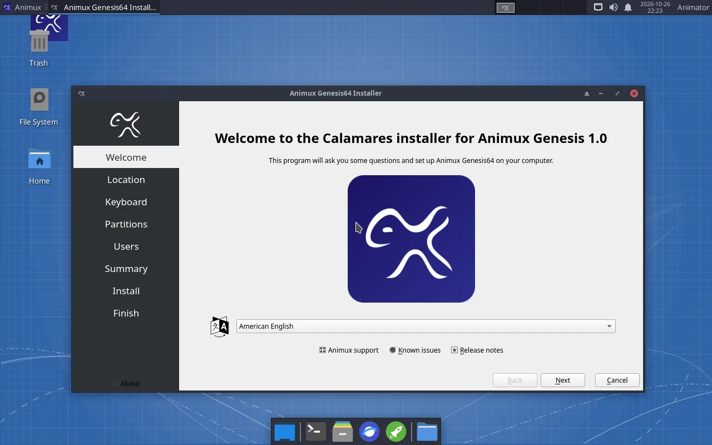
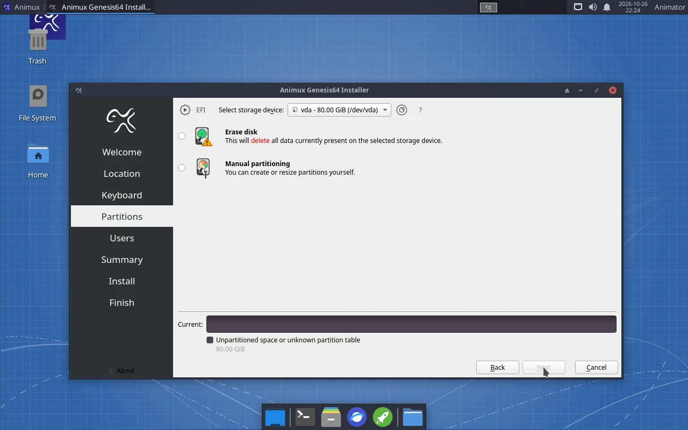
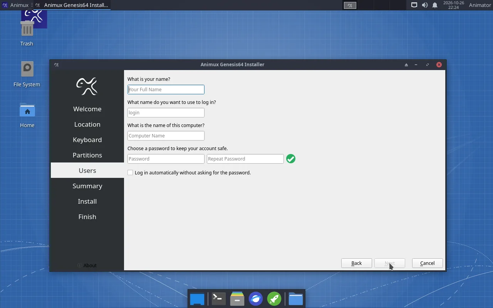
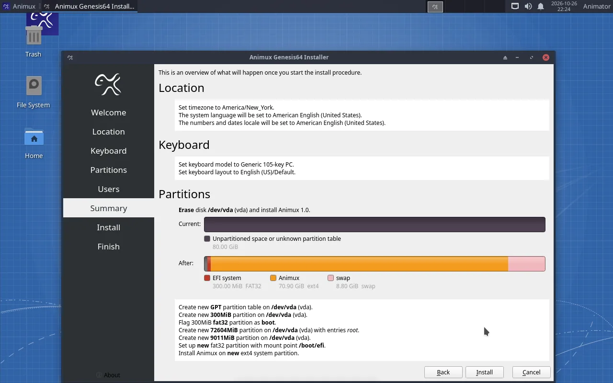
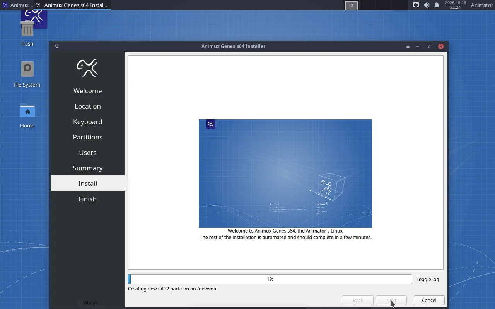
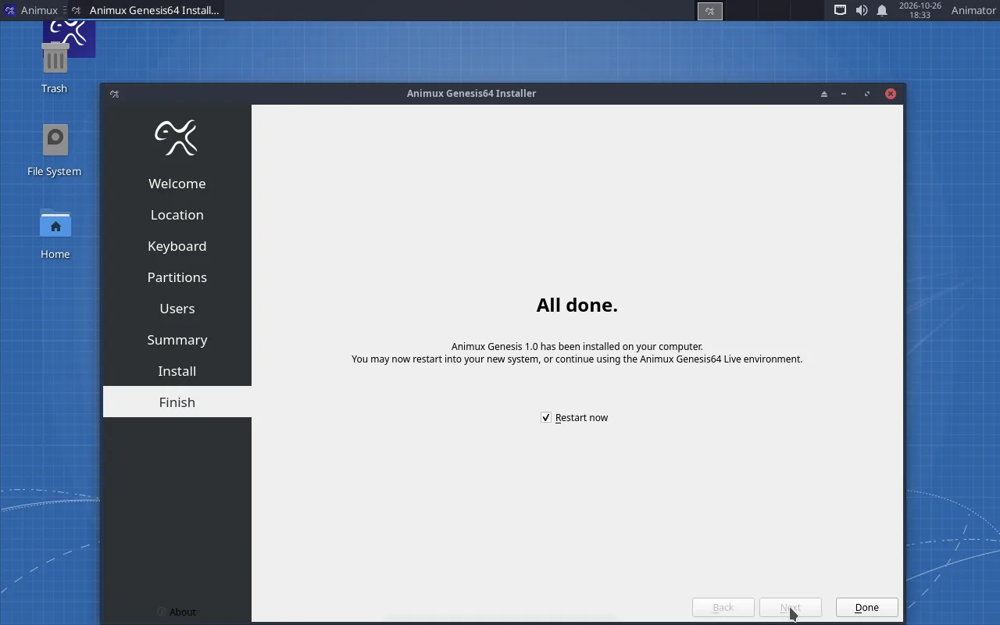
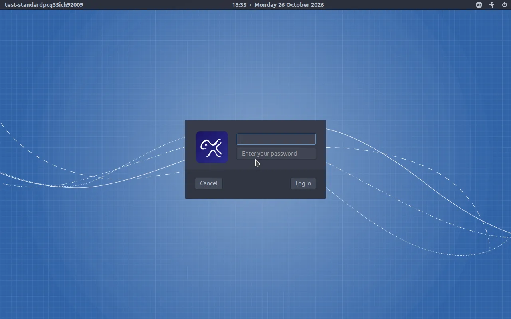

Installing copies Animux onto a disk, so it starts without the USB stick and keeps your files and settings. It takes 15–40 minutes.
Back up first
Installing can erase a disk. Copy everything important from the computer to another drive first. In a virtual machine this does not matter: the installer only sees the empty virtual disk.
Before you start#
- A disk (or free space) of at least 40 GB; 100 GB or more is better.
- The computer plugged in to power.
- For dual boot with Windows: shrink Windows first, in Windows: Disk Management → right-click C: → Shrink Volume, and free at least 60 GB. Also turn off Windows Fast Startup and, if it is on, BitLocker for the time of the installation.
1. Start the installer#
Start from the USB stick or ISO and choose Install Animux Genesis64 to Disk in the boot menu. The desktop starts and the installer opens by itself.
(The installer can also be started from a normal live session: open a terminal and type sudo -E calamares.)
2. Welcome, location, keyboard#


- Welcome: choose your language, click Next.
- Location: click your region on the map, or choose region and city. This sets the clock and the date format.
- Keyboard: choose your keyboard layout. Type in the test box to check that the keys are right (especially
@,"and/).
3. Partitions: where Animux goes#


At the top, Select storage device shows the disk. Make sure it is the right one: check its size.
| Option | Use it when |
|---|---|
| Erase disk | The whole disk is for Animux (new disk, virtual machine). Everything on the disk is deleted. |
| Install alongside | Windows or another system is on the disk and you want to choose at every start. Drag the divider to give Animux its share. Only shown when there is room. |
| Replace a partition | You prepared an empty partition for Animux. |
| Manual partitioning | You know exactly which partitions you want. |
For Erase disk you can also choose Swap (extra memory on disk; Swap (with Hibernate) lets you hibernate) and tick Encrypt system to protect a laptop with a password at every start.
4. Users#


| Field | Example | Note |
|---|---|---|
| What is your name? | Ada Lovelace |
shown on the login screen |
| Login name | ada |
lower case, no spaces |
| Computer name | ada-studio |
how the computer is called on the network; use different names on render farm computers |
| Password (twice) | You need it to log in and to install software. Write it down. | |
| Log in automatically | Tick it only on a computer nobody else uses. |
5. Summary and installation#


Read the summary. Nothing has been changed yet. Click Install, then Install now.




When it says All done, tick Restart now and click Done. Remove the USB stick when the screen goes black (in VirtualBox: remove the ISO under Settings → Storage).
6. First start from the disk#
Animux shows its splash screen, then the login screen. Type your password and press Enter.


Continue with First steps after installing.
Dual boot: choosing Windows or Animux#
With Install alongside, every start shows a menu where you choose Animux or Windows Boot Manager. If Windows starts straight away without a menu, open your computer's boot menu (F12 etc., see USB stick) or set debian first in the firmware's boot order.